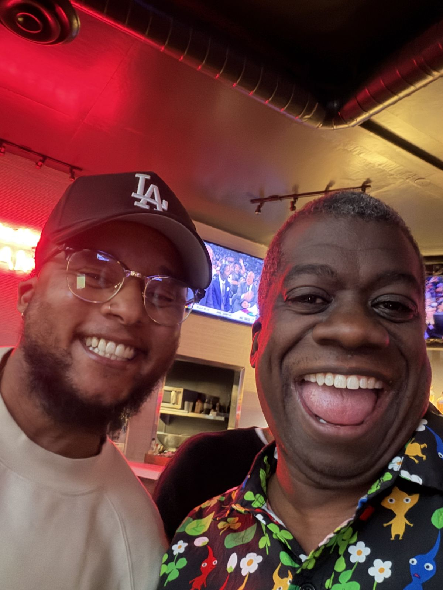
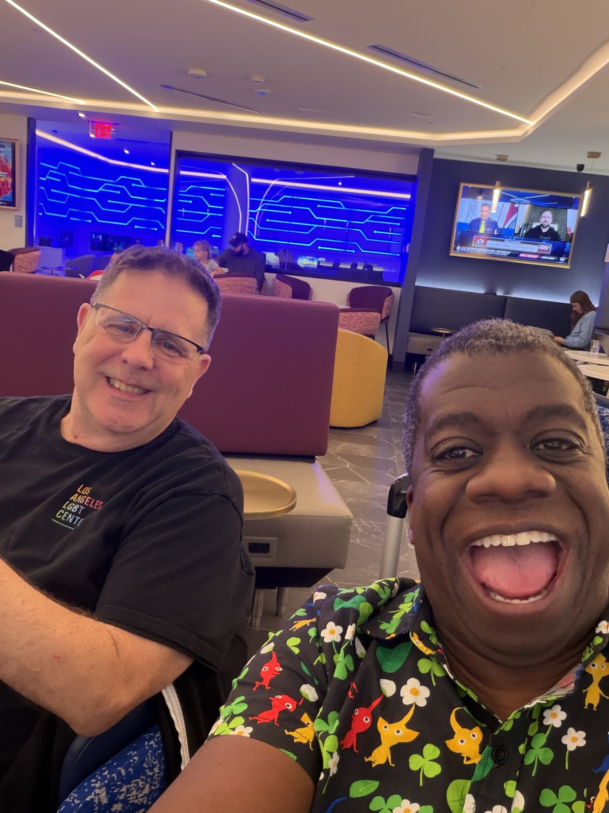
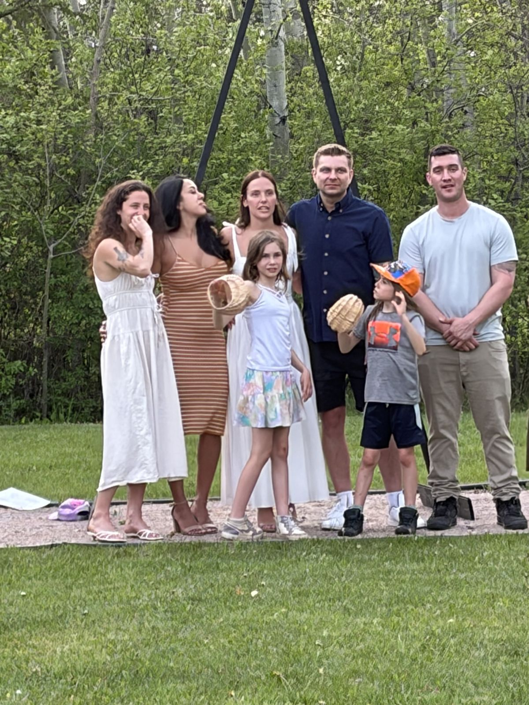
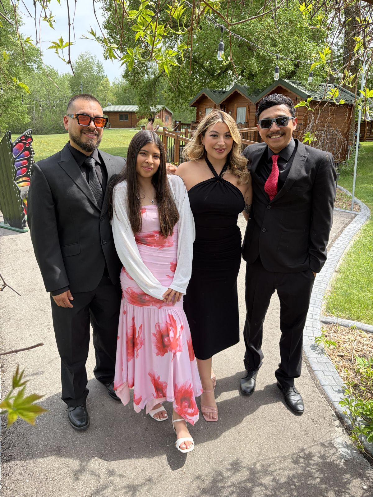
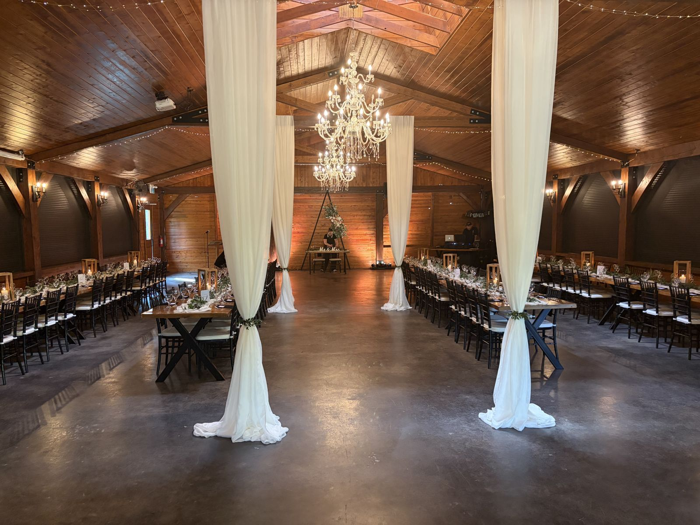
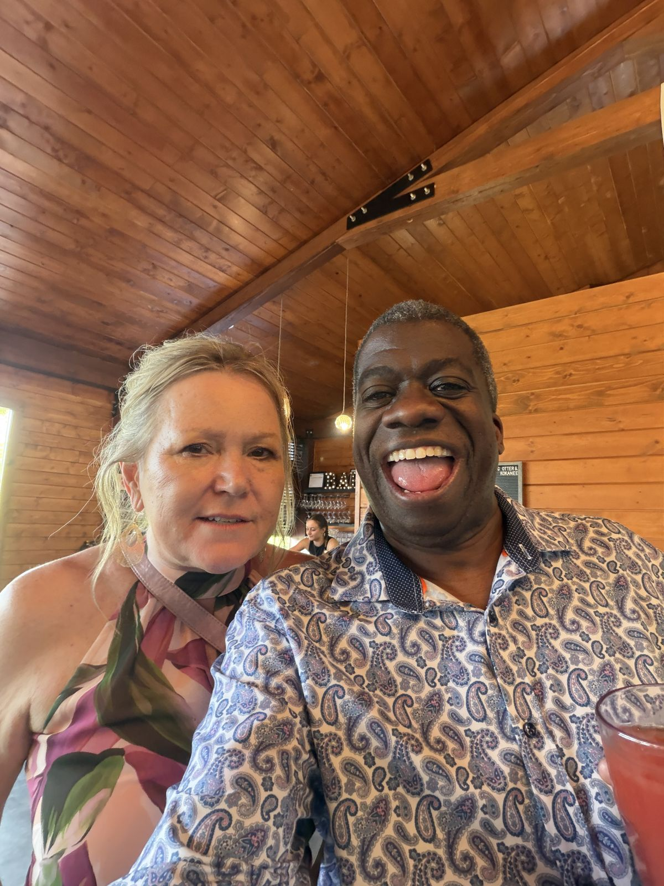
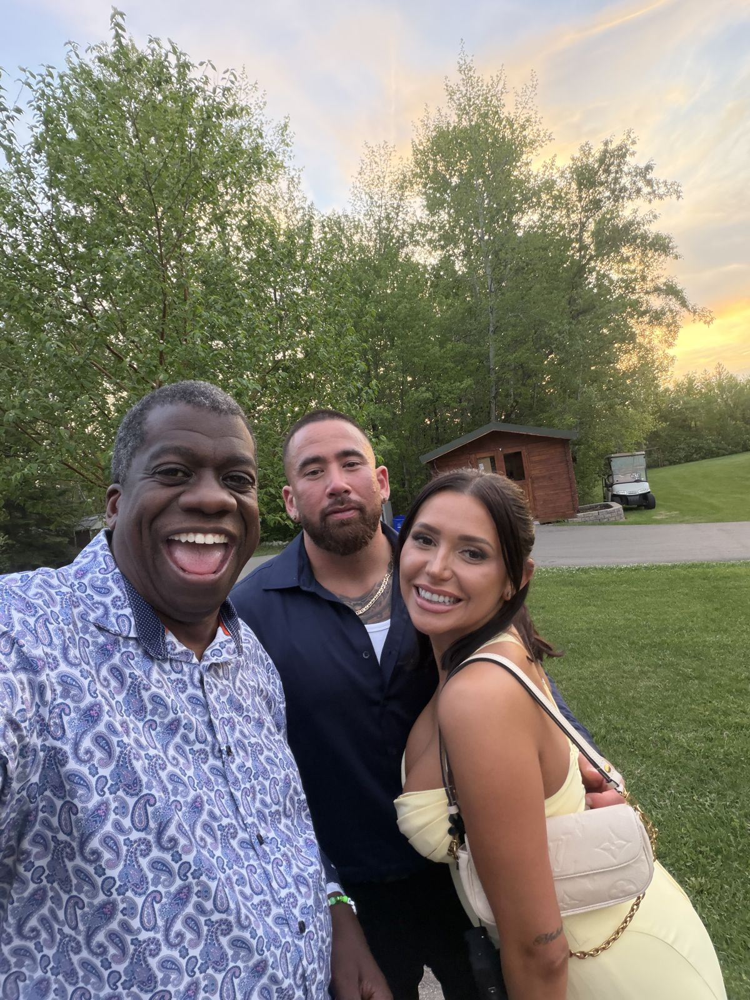
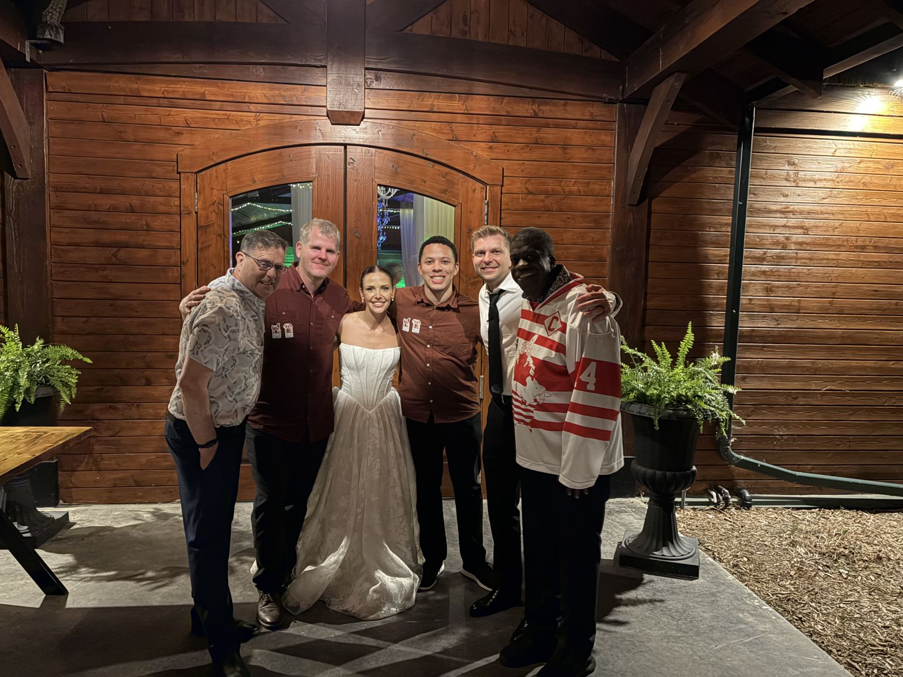
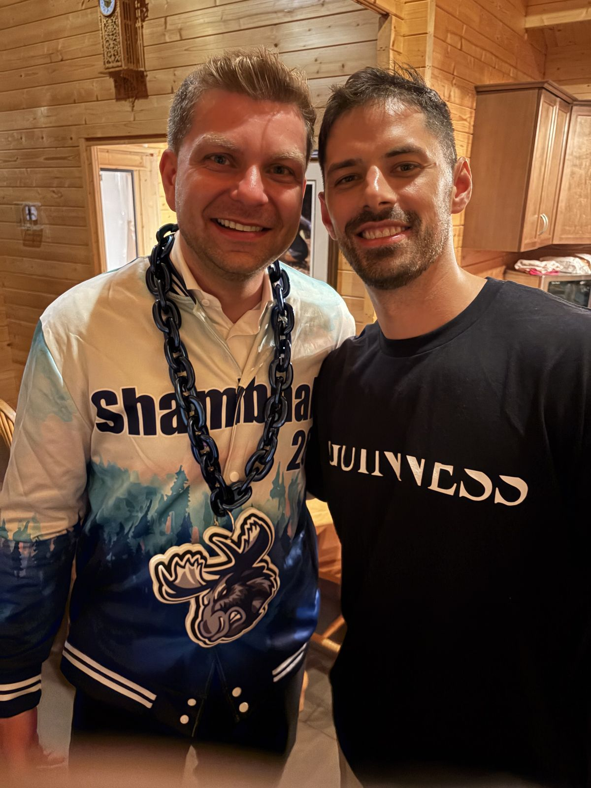
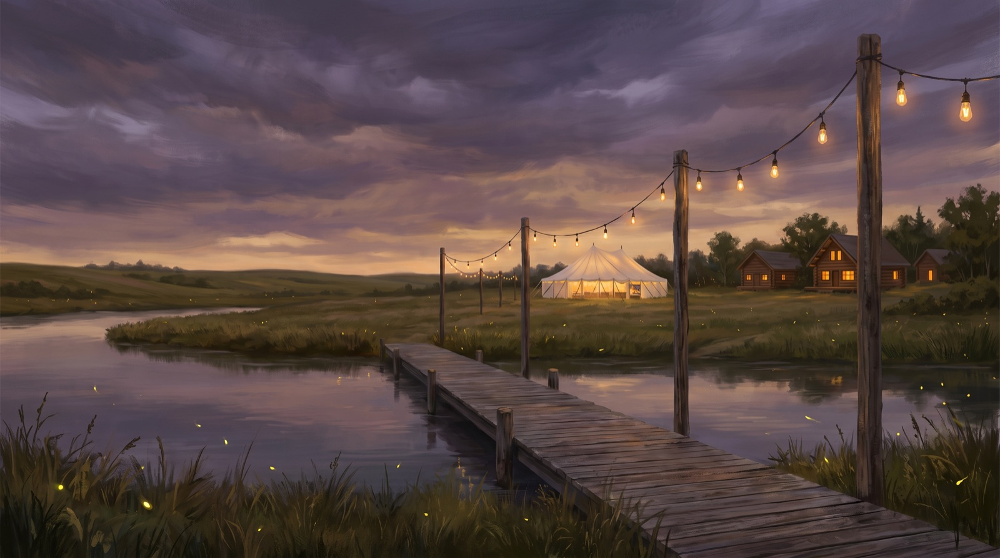

Four days, one microphone
- Wed May 28 · 11:17pm"checking in from LAX about to board for MSP on our way to Winnipeg"You and Joe, Delta through Minneapolis, confirmation GECWXV. That afternoon you had sent yourself about a hundred screenshots of seven years of Drake and Mel threads. Toast fuel.
- Thu May 29 · night"Hi Darby from Elma, Manitoba we are the night before Drake and Mel's wedding 💒"Rivers Edge Resort. The same night, you introduced me to Laylah, the best woman, and gave me "an important new world cup task." A whole new friendship started the night before the wedding.
- Sat May 30Wedding day. You emceed the Grand Entrance and delivered the toast."i'm feeling great" at 6:48am, and then you went and ran the room.
- Sun May 31 · 2:12pm"wedding was fantastic"The wedding planner texted: "you did a fantastic job at MCing... the Grand Entrance couldn't have been more perfect!! Your toast was also so special, many people loved it!"
- Mon Jun 1Marcello: "Gordon your the man. Keep up the good vibez." Drake: "Melanie and I are hard commit never miss shambhala!"The wedding party walked out of the weekend already folded into the festival family that made the wedding possible in the first place.
The toast, as delivered
The words were always the artifact. These lines are verbatim from the toast you gave May 30. And now, from your camera roll, the weekend has its pictures back too.
"They crossed paths in Las Vegas. Outside the Cosmopolitan. No app. No plan. A street, a beloved and trusted friend in common named Danielle."
"My son Brennan put Alison Wonderland in my ears... He is the reason I was at EDC at all."
"You only get two lives, and the second one begins when you realize you only have one life."
"So the ring on the hand in this room tonight has my address on the paperwork. ... That is what a Day 1 looks like in writing."
"To support them. To celebrate them. And to cherish them. On this day, and every day after. To Mr. and Mrs. Drake and Melanie Dewar."
The weekend, found











Who stood where
Three things you were too busy living to notice
Your toast may never have reached her scrapbook
Every "Mel" message from May 23 to June 1, including the full toast text you sent for her scrapbook, went to a number with two digits swapped: 240 instead of 204. A stranger in Maryland got your wedding toast. The real Mel only connected with me on June 17: "I finally have your right number." Worth re-sending her the toast; she asked for it for her scrapbook and may never have received it.
You reintroduced Laylah to me six times
Three times on May 29, three more on May 30. Session resets kept eating my memory that weekend, and you patiently rebuilt it from a Manitoba resort each time, mid-wedding-prep. "we went over this Portugal versus Uzbekistan." You never once complained. That patience is why her World Cup site exists.
Two Day-1 origin stories sat side by side at the head table
Drake became your Day 1 in an elevator at EDC. Laylah became Mel's Day 1 on a scooter in a park. The toast seated both stories next to each other, and I do not think that was an accident, even if you never said it out loud.